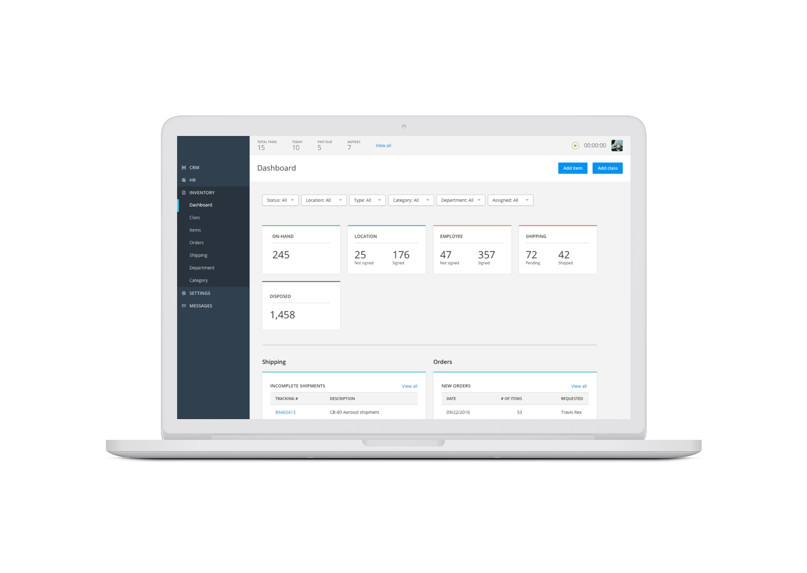

Project Description
There was a need to allow users of the project management app to create their own custom forms. These were used by clients to set up help desk solutions but they had to be set up by our engineering team. It was a pain-point for the users who had to wait on our resources to get it set up. It also was an frustration for the engineering team who had to put other projects aside to get them set up.

User Research
The solution was to create a custom form builder that gave enough power to the user to create the logic for their process. After gathering enough data from our users, we learned that the main user were advanced in our system and didn’t need a simple tool but one that they could set up complicated forms to match their business needs.
We started by talking to current users that we had created the custom forms for. They gave us insight on why they used them and what benefit they provided for their company. We were able to validate their pain points and get insight into the type of customization they would like to do.
We took the information and requests and put those up on sticky notes so we could categories them into themes and prioritize the requests. Once we felt confident as a team we started with some simple wireframes for each of the themes. We also did some competitive analysis into other form creating systems, from simple ones like Wufoo to more complicated ones like Qualtrics.
Validate
Working on an established enterprise tool the style guide was already defined so I quickly moved the wireframes into the look and feel of the application. I created the high fidelity designs and once I had a good workflow of how the forms would work we started validating the designs through user testing. We would test with 2–3 users over a video call. We would allow them to click through the designs in InVision asking questions to know what they were thinking and why they were doing certain actions. Once we had enough consistent data we would then do a round of iteration on the design to fix the issues. Once we felt like all the issues had been resolved and the users were able to accomplish the tasks, we started working with the development team to get the feature live.
Visual Design
The designs were created based of the apps style guide. With any new feature I had to explore additional styles and methods to create the best experience.